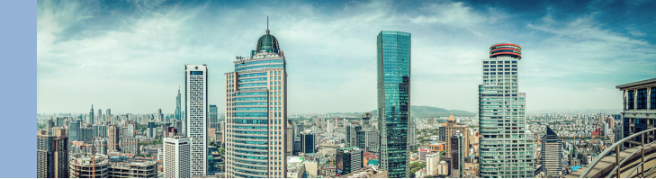
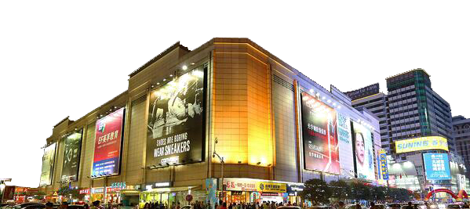

新街口位于南京市中心区域，以新街口广场（孙中山铜像）为标志，是中国著名的商业中心，拥有百年历史，被誉为“中华第一商圈” 。中山大道由此折东，中山东路、中正路（今中山南路）、汉中路和中山路四条宽40多米的林荫大道在此交汇，中间形成环形的新街口广场，并以一尊孙中山铜像为分隔，成为南京的交通枢纽，便利的交通带来众多商家和企业。

在新街口这块不到1平方公里的“弹丸之地”，已经集中了近700家商店，1万平方米以上的大中型商业企业就有近30家。仅白下区侧0.3平方公里的范围内，就有各种地面商务商贸设施120多万平方米，近500家工企单位，其中商业面积70多万平方米，娱乐面积8万多平方米，金融面积10万多平方米，商务面积37万多平方米，另外还有20多万平方米的地下商业设施，新街口商业街区的密集程度之高，在全国都不多见。
